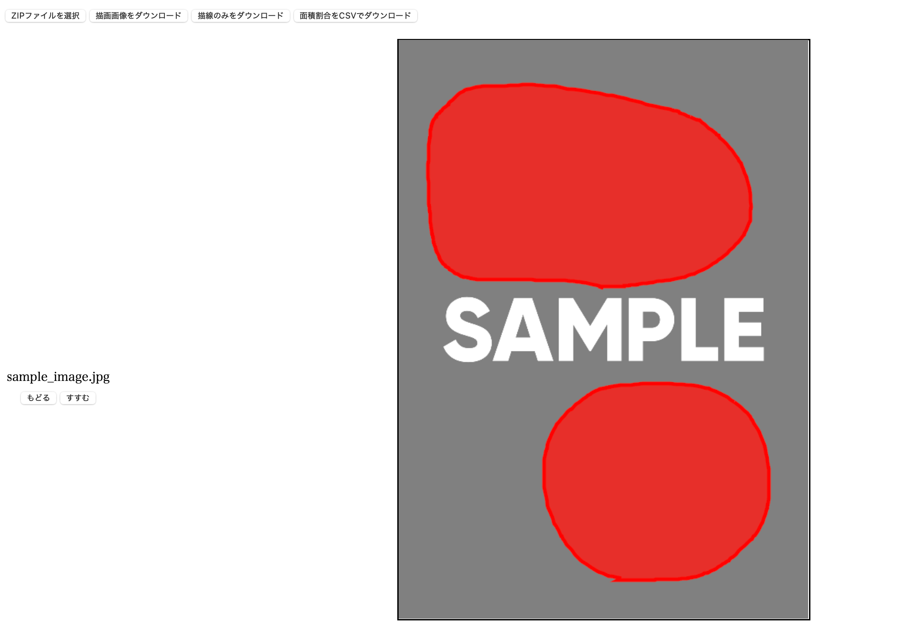
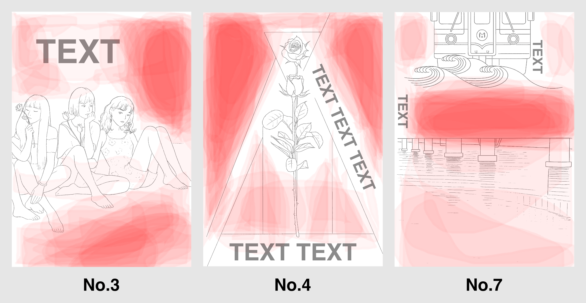
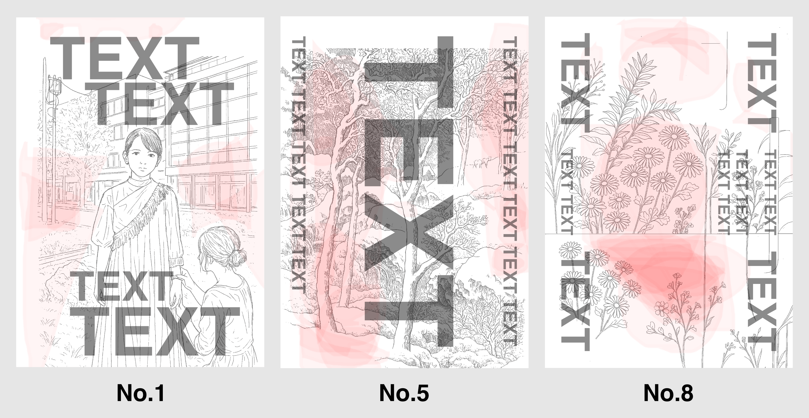
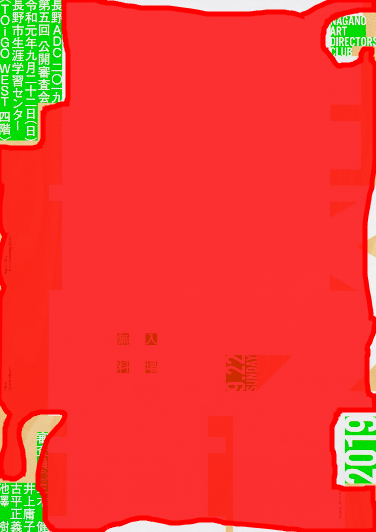
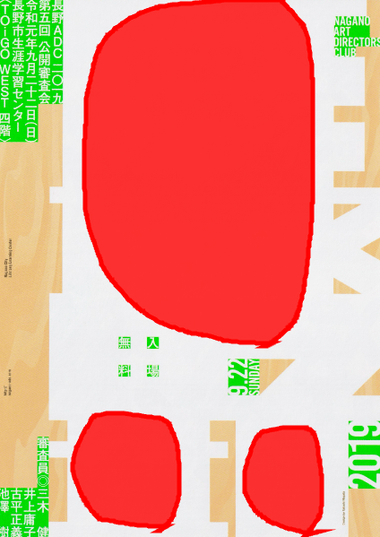
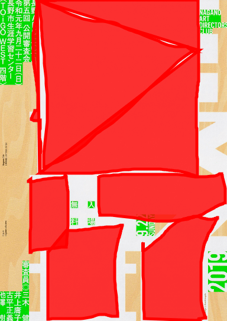
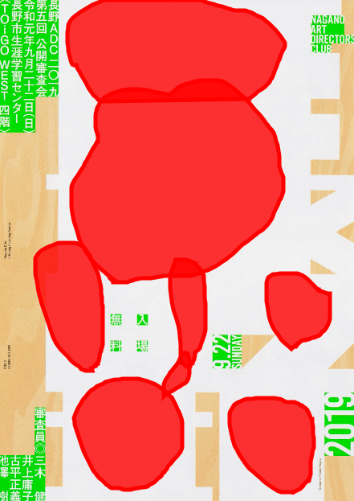
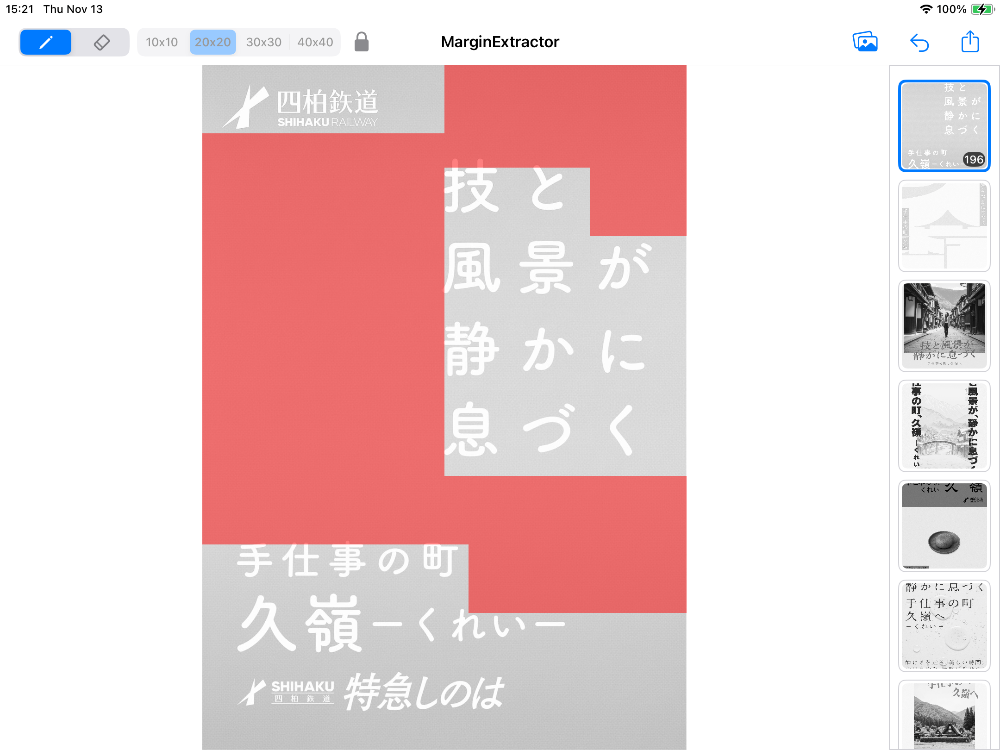
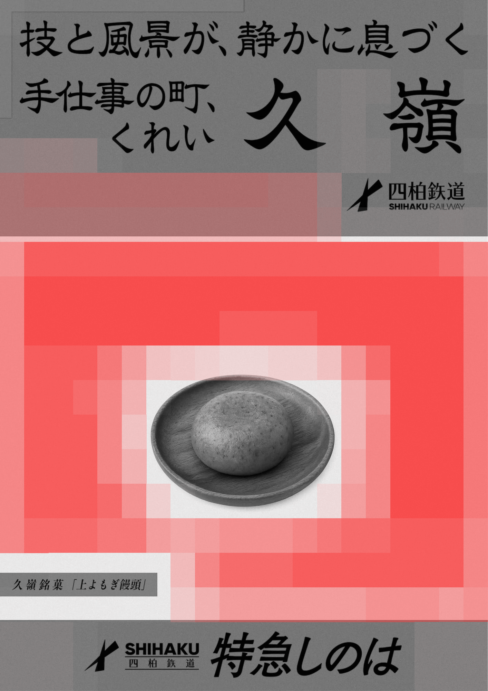
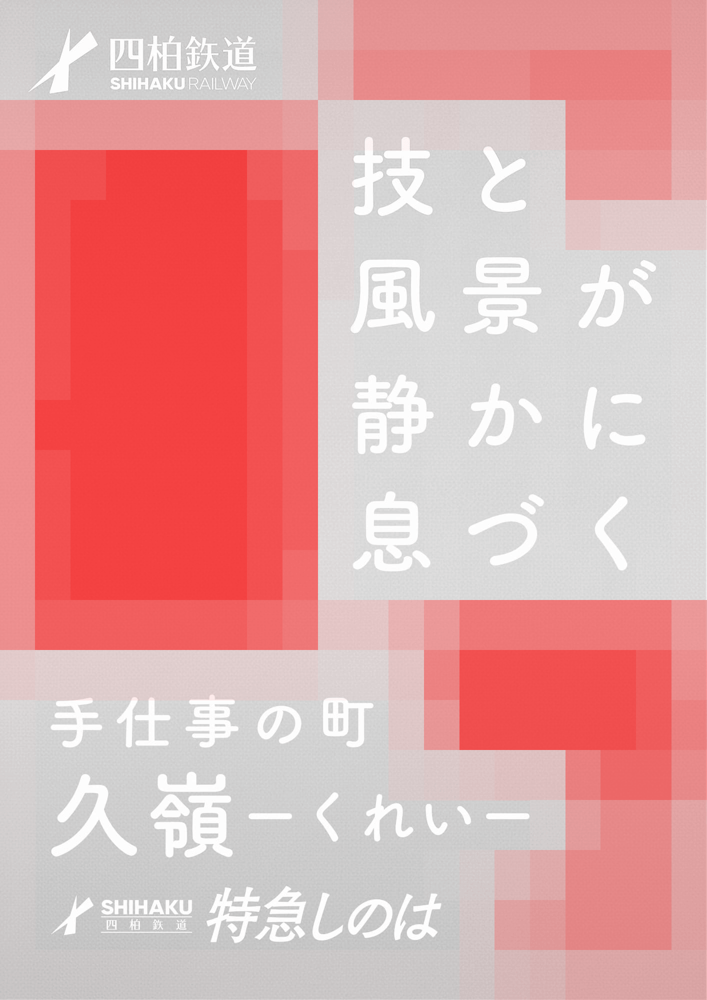

Exploratory Study on the Extraction of White Space in Poster Design
視覚デザインにおける「余白」は重要な構成要素として知られていますが、余白を定量的に捉える手法は確立されていません。本研究では、ポスターデザインを対象に余白の抽出手法を探索的に検討しました。
参加者に余白を描線で囲ませる手法により、余白の知覚に4つの特徴的パターンを確認。余白は単なる物理的空白ではなく、オブジェクトとの関係性において意味づけられる感性的領域である可能性が示唆されました。
描線ベースの課題を踏まえ、グリッドベースのツールを新たに開発・実施。定量的な比較分析を行い、コントラスト・背景の均一性・写真背景の有無が参加者間の一致度に影響する可能性が示唆されました。
変動係数の分析から、余白認識が「物理的特徴にもとづくもの」「視覚的知覚にもとづくもの」「意味的解釈にもとづくもの」の3類型に分類できる可能性が示されました。
以下、研究の詳細をご紹介します
視覚デザインにおける「余白」は重要な構成要素として認識されてきました。
デザイン教本では余白を適切に用いることで洗練された印象を与えるテクニックが繰り返し紹介されています。
ポスターデザインにおいて、人が感性的に知覚する余白を抽出・定量化する手法を探索的に検討することを目的としました。
参加者に余白を描線で囲ませる手法により、ポスターデザインにおいて人が感覚的に知覚する余白領域を抽出し、その分布傾向と特徴を明らかにする
描線ベースの課題を克服する新たな手法を提案・実装し、参加者間の一致度分析やヒートマップによるパターン分析で有効性を検証する
8名 × 14点のポスター画像で余白領域を描線で囲み、余白に対する意識調査を実施
描線ベース21名 × 20点のポスター画像。印象評価（12項目 × 5段階）＋ 描線ツールによる余白抽出
描線ベース余白の面積スコアと印象評価の相関分析、因子分析によるデザイン評価構造の解明
描線ベース描線ベースの課題を解消するため、iPad専用アプリとしてグリッドベース手法を開発
グリッドベース22名 × 8点の実験刺激で余白抽出。参加者間の一致度分析、ヒートマップによるパターン分析
グリッドベース参加者に「余白を感じる領域」を画像上に描線で囲むよう求め、余白の知覚と分布傾向を調べました。



描線ベースツールの使用から見えた課題を踏まえて、グリッドベースの余白抽出手法を新たに提案・実装しました。
同一のポスターに対して、参加者ごとに描画スタイルが大きく異なっていた




iPad専用のネイティブアプリケーションとして開発。20×20の固定グリッド（400セル）で余白を選択します。

22名の参加者 × 8種類のポスター（グレースケール）で余白選択データを収集し、参加者間の一致度と選択パターンを分析しました。
※ 刺激はすべて架空の鉄道会社「久嶺」の観光広告に統一し、コンテンツの違いによる影響を排除
22名の選択を重ね合わせたヒートマップを生成し、各ポスターの選択傾向を分析しました。
濃い赤 = 多数が選択（高一致） / 薄い赤 = 一部が選択（低一致）

均一な背景 + 高コントラストのテキストで高い一致度

明瞭なコントラスト＋シンプルな構成で比較的高い合意度
写真周囲に明確な余白がある「額縁型」配置
竹林の写真背景で参加者の判断が二極化
変動係数（CV）と参加者の判断基準の分析から、余白認識の暫定的な3類型が示唆されました。
余白の知覚に4つの特徴的パターンを確認し、余白が単なる物理的空白ではなくオブジェクトとの関係性において意味づけられる感性的領域である可能性を示唆しました。
描線ベースの課題（粒度のばらつき、境界の曖昧さ）を踏まえたグリッドベースの抽出ツールを開発し、定量的な比較分析を実施しました。
コントラスト・背景の均一性・写真背景の有無が参加者間の一致度に影響することを特定。余白認識の暫定的な3類型（物理的・視覚的・意味的）が示唆されました。